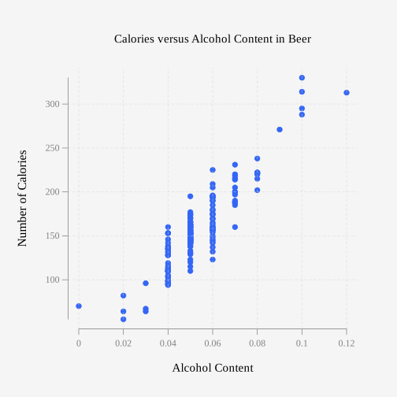
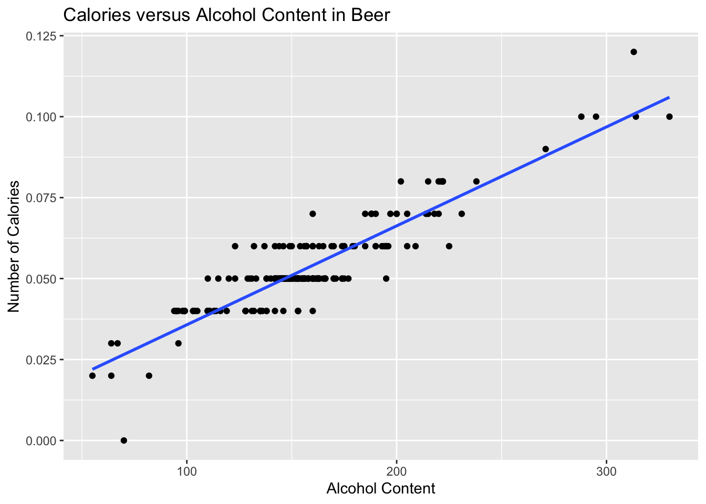

| beer | brewery | location | alcohol | calories | carbs |
|---|---|---|---|---|---|
| American Amber Lager | Straub Brewery | domestic | 0.04 | 136 | 10.5 |
| American Lager | Straub Brewery | domestic | 0.04 | 132 | 10.5 |
| American Light | Straub Brewery | domestic | 0.03 | 96 | 7.6 |
| Anchor Porter | Anchor | domestic | 0.06 | 209 | NA |
| Anchor Steam | Anchor | domestic | 0.05 | 153 | 16.0 |
| Anheuser Busch Natural Light | Anheuser Busch | domestic | 0.04 | 95 | 3.2 |
11 Regression
The previous chapter looked at comparing populations to see if there is a difference between the two. That involved two random variables that are similar measures. This chapter will look at two random variables that do not need to be similar measures, and see if there is a relationship between the two or more variables. To do this, you look at regression, which finds the linear relationship, and correlation, which measures the strength of a linear relationship.
Please note: there are many other types of relationships besides linear that can be found for the data. This book will only explore linear, but realize that there are other relationships that can be used to describe data.
11.1 Regression
When comparing different variables, two questions come to mind: “Is there a relationship between two variables?” and “How strong is that relationship?” These questions can be answered using regression and correlation. Regression answers whether there is a relationship (again this book will explore linear only) and correlation answers how strong the linear relationship is. The variable that are used to explain the change in the other variable is called the explanatory variable while the variable that is changing is called the response variable. Other variables that help to explain the changes are known as covariates. To introduce the concepts of regression and correlation it is easier to look at a set of data.
11.1.1 Example: Determining if there is a Relationship
Is there a relationship between the alcohol content and the number of calories in 12-ounce beer? To determine if there is one, we explore a sample of 227 beers’ alcohol content and their calories (Find Out How Many Calories in Beer?, 2019). Table 11.1 shows the first five rows of the dataset.
- Go to your Rguroo account.
- Open the Data toolbox.
- Click on Data Import dropdown and select Dataset Repository.
- In the searchbox on the top type in the keyword kozak. Then select the ``Statistics Using Technology - Kozak’’ repository.
- In the middle searchbox type in beer and select the beer_data dataset.
- Click the button. The dataset will be imported to your Rguroo account.
- Click the button to close the Rguroo dialog.
- To view the dataset, click on the beer_data under the Data toolbox.
Code book for data frame Beer
Description Collection of the most popular beers from large breweries. The data is of the calories, carbs and alcohol of a specific beer. The data is shown for a 12 ounce serving. The collection includes both domestic and import beer. For the imported beers the information is per 12 oz. serving even though many imports come in pints.
This dataset contains the following columns:
beer: The name of the beer.
brewery: the brewery that brews the beer.
location: whether the beer is brewed in the U.S. (domestic) or brewed in another country (import).
alcohol: the alcohol content of the beer.
calories: the number of calories in the beer.
carbs: the amount of carbohydrates in the beer (g).
Source Find Out How Many Calories in Beer? (n.d.). Retrieved July 21, 2019, from
References (Find Out How Many Calories in Beer?, 2019)
11.1.1.1 Solution
To aid in figuring out if there is a relationship, it helps to draw a scatter plot of the data. First it is helpful to state the random variables, and since in an algebra class the variables are represented as \(x\) and \(y\), those labels will be used here. It helps to state which variable is \(x\) and which is \(y\).
State random variables
\(x\) = alcohol content in the beer
\(y\) = calories in 12 ounce beer
- Go to your Rguroo account. Make sure that you have already imported the beer_data dataset by following the instructions given above.
- Open the Plots toolbox.
- Click on the Create Plot dropdown, and select Scatterplot. This opens the Scatterplot dialog.
- From the Dataset dropdown, select the beer_data dataset.
- From the Predictor (x) dropdown, select the alcohol variable.
- From the Response (y) dropdown, select the calories variable.
- (Optional) In the Label section of the dialog:
- In the Title textbox, enter Calories versus Alcohol Content in Beer.
- In the X-Axis textbox, enter Alcohol Content.
- In the Y-Axis textbox, enter Number of Calories.
- In the Title textbox, enter Calories versus Alcohol Content in Beer.
- Click the preview icon
 to see a preview of the scatterplot.
to see a preview of the scatterplot.
Click here to see the Rguroo dialog


This scatter plot shown in Figure 11.1 looks fairly linear.
To find the equation for the linear relationship, the process of regression is used to find the line that best fits the data (sometimes called the best fitting line). The process is to draw the line through the data and then find the vertical distance from a point to the line. These are called the residuals. The regression line is the line that makes the square of the residuals as small as possible, so the regression line is also sometimes called the least squares line. The regression line on the scatter plot is displayed in Figure 11.2.
gf_point(alcohol~calories, data=Beer, title="Calories versus Alcohol Content in Beer", xlab="Alcohol Content", ylab="Number of Calories") |>
gf_lm()

11.1.2 Find the regression equation (also known as best fitting line or least squares line)
Given a collection of paired sample data, the regression equation is \(\hat{y}=mx+b\)
where the slope = \(m\) and \(y\)-intercept = \((0,b)\)
To find the linear model using r Studio, use the command:
lm(response_variable~explanatory_variable, data=Data_Frame
The residuals are the difference between the actual values and the estimated values.
The independent variable, also called the explanatory variable or predictor variable, is the \(x\)-value in the equation. The independent variable is the one that you use to predict what the other variable is. The dependent variable depends on what independent value you pick. It also responds to the explanatory variable and is usually called the response variable. In the alcohol content and calorie example, it makes slightly more sense to say that you would use the alcohol content on a beer to predict the number of calories in the beer.
Conditions of the regression line when creating a regression line from a sample:
The set of ordered pairs is a random sample from the population of all such possible pairs.
For each fixed value of \(x\), the \(y\)-values have a normal distribution. All of the \(y\) distributions have the same variance, and for a given \(x\)-value, the distribution of \(y\)-values has a mean that lies on the least squares line. You also assume that for a fixed \(y\), each \(x\) has its own normal distribution. This is difficult to figure out, so you can use the following to determine if you have a normal distribution.
Look to see if the scatter plot has a linear pattern.
Examine the residuals to see if there is randomness in the residuals. If there is a pattern to the residuals, then there is an issue in the data.
11.1.3 Example: Find the Equation of the Regression Line
Is there a relationship between the alcohol content and the number of calories in 12-ounce beer? To determine if there is one a sample of beer’s alcohol content and calories (Find Out How Many Calories in Beer?, 2019), is in Table 11.1.
- Find the regression equation between alcohol content and calories.
- Use the regression equation to find the number of calories when the alcohol content is 7.00%.
- Use the regression equation to find the number of calories when the alcohol content is 14%.
11.1.3.1 Solution
- Find the regression equation between alcohol content and calories.
State random variables
\(x\) = alcohol content in the beer
\(y\) = calories in 12 ounce beer
To find the regression equation using rStudio for this example, the command would be
lm(calories~alcohol, data=Beer)
Call:
lm(formula = calories ~ alcohol, data = Beer)
Coefficients:
(Intercept) alcohol
14.53 2672.36 From this you can see that the y-intercept is 14.53 and the slope is 2672.36. So the regression equation is \(\hat{y}=2672x+14.3\).
Remember, this is an estimate for the true regression. A different sample would produce a different estimate.
Conditions check:
State: A random sample of alcohol content and calories was taken.
Check: There is no guarantee that this was a random sample. The data was collected off of a website, and the website does not say how the data was obtained. However, it is a collection of most popular beers from large breweries, so it may be alright that it isn’t a random sample.
State: The distribution for each calorie value is normally distributed for every value of alcohol content in the beer.
Check:
From Figure 11.1, the scatter plot looks fairly linear.
To graph the residuals, first the residuals need to be calculated. This means that for every \(x\) value, you need to calculate the \(y\) value that can be found from the regression equation. Then subtract the \(y\) value that was measured from this calculated \(y\) value. This is \(\hat{y}-y\). Luckily, rStudio will calculate these for you. The command is:
lm_out_beer<-lm(calories~alcohol, data=Beer)
knitr::kable(residuals(lm_out_beer))| x |
|---|
| 14.5785382 |
| 10.5785382 |
| 1.3021259 |
| 34.1313626 |
| 4.8549504 |
| -26.4214618 |
| -17.8686374 |
| -27.4214618 |
| 6.8549504 |
| 20.1313626 |
| 28.8549504 |
| 20.1313626 |
| 14.8549504 |
| 5.8549504 |
| 14.8549504 |
| 4.8549504 |
| 22.8549504 |
| 21.1313626 |
| 18.1313626 |
| -18.1450496 |
| -51.8686374 |
| -33.1450496 |
| -11.4214618 |
| -5.4214618 |
| -37.8686374 |
| -3.1450496 |
| -28.8686374 |
| -22.4214618 |
| -12.9742863 |
| -15.1450496 |
| -5.8686374 |
| -26.4214618 |
| 16.5785382 |
| -0.8686374 |
| 0.8549504 |
| -17.4214618 |
| 13.8549504 |
| 5.1313626 |
| -11.5922251 |
| 3.8549504 |
| -6.3158129 |
| 9.8549504 |
| -9.8686374 |
| -22.2101640 |
| -24.8686374 |
| 15.9605993 |
| 32.2370115 |
| -10.1450496 |
| -4.5922251 |
| 9.6841871 |
| -20.8686374 |
| -7.3158129 |
| -11.8686374 |
| -13.5922251 |
| -19.1450496 |
| 6.2370115 |
| -17.1450496 |
| -0.1450496 |
| 13.8549504 |
| -18.8686374 |
| -0.1450496 |
| 13.8549504 |
| -42.8686374 |
| -25.8686374 |
| -18.4214618 |
| -4.1450496 |
| -4.1450496 |
| -11.4214618 |
| -10.4214618 |
| -18.4214618 |
| -32.8686374 |
| 0.8549504 |
| 14.8549504 |
| 3.8549504 |
| 21.8549504 |
| 17.8549504 |
| 16.8549504 |
| -16.4214618 |
| -11.4214618 |
| 11.8549504 |
| 11.8549504 |
| -17.8686374 |
| -3.1450496 |
| 17.8549504 |
| 6.8549504 |
| 3.8549504 |
| -11.4214618 |
| 26.8549504 |
| -8.4214618 |
| -26.4214618 |
| -17.8686374 |
| -17.8686374 |
| -11.4214618 |
| -5.1450496 |
| -11.4214618 |
| -30.6978741 |
| -5.1450496 |
| -11.4214618 |
| -25.4214618 |
| 6.5785382 |
| -11.4214618 |
| -11.4214618 |
| -11.4214618 |
| 6.5785382 |
| -23.4214618 |
| -30.8686374 |
| 30.1313626 |
| -1.5922251 |
| -1.5922251 |
| -8.1450496 |
| 11.8549504 |
| 6.8549504 |
| -13.3158129 |
| -3.1450496 |
| 55.4728892 |
| -7.4214618 |
| -2.1450496 |
| -14.8686374 |
| -26.3158129 |
| -8.3158129 |
| -2.1450496 |
| -4.1450496 |
| -27.6978741 |
| 25.8549504 |
| -1.1450496 |
| 4.1313626 |
| -13.5922251 |
| -6.1450496 |
| -28.1450496 |
| 11.8549504 |
| 11.8549504 |
| 17.8549504 |
| 46.8549504 |
| 0.1313626 |
| -2.4214618 |
| -3.1450496 |
| -6.1450496 |
| -2.1450496 |
| -11.4214618 |
| 10.1313626 |
| 15.1313626 |
| 48.2370115 |
| 12.4077749 |
| 8.8549504 |
| 15.1313626 |
| 13.4077749 |
| 29.4077749 |
| 0.1313626 |
| 16.4077749 |
| 19.1313626 |
| 50.1313626 |
| 9.8549504 |
| 31.5785382 |
| 4.8549504 |
| -25.1450496 |
| -6.3158129 |
| -6.3158129 |
| -14.8686374 |
| 0.8549504 |
| -8.4214618 |
| 20.1313626 |
| -1.1450496 |
| 14.8549504 |
| 7.8549504 |
| 1.8549504 |
| 13.5785382 |
| 2.8549504 |
| 12.8549504 |
| -1.1450496 |
| -3.1450496 |
| 1.8549504 |
| 13.5785382 |
| -23.4214618 |
| 13.5785382 |
| -22.4214618 |
| -2.1450496 |
| -14.8686374 |
| -2.1450496 |
| -5.1450496 |
| -3.9742863 |
| -2.1450496 |
| 6.5785382 |
| 24.5785382 |
| 7.8549504 |
| -0.1450496 |
| 0.8549504 |
| 7.8549504 |
| 18.4077749 |
| 7.8549504 |
| 16.5785382 |
| 11.8549504 |
| -6.1450496 |
| -3.1450496 |
| 31.5785382 |
| -6.1450496 |
| 1.8549504 |
| 21.8549504 |
| -22.4214618 |
| -13.5922251 |
| 4.8549504 |
| 14.8549504 |
| 4.8549504 |
| 13.2370115 |
| 4.8549504 |
| -4.8686374 |
| 14.0257137 |
| 4.8549504 |
| -38.1450496 |
| -6.1450496 |
| 38.5785382 |
| 4.8549504 |
| 9.8549504 |
| 25.8549504 |
| 9.5785382 |
| -16.5922251 |
| -0.1450496 |
| 1.8549504 |
| -10.1450496 |
| 31.5785382 |
| 6.5785382 |
| -41.5922251 |
| 3.4077749 |
| -2.1450496 |
| 4.8549504 |
| 20.5785382 |
| 11.8549504 |
| 4.8549504 |
lm_out_beer saves the linear model into a variable called lm_out_beer
residuals(lm_out_beer) finds the residuals for each \(x\) value based on the linear model, lm_out_beer, and displays them.
Now graph the residuals to see if there is any pattern to the residuals. The command in rStudio is:
gf_point(residuals(lm_out_beer)~alcohol, data=Beer, title="Residuals for Calories in beer", xlab="Alcohol Content", ylab="Residuals for Number of Calories") 
The residual versus the \(x-\)values plot Figure 11.3 looks fairly random.
It appears that the distribution for calories is a normal distribution.
- Use the regression equation to find the number of calories when the alcohol content is 7.00%.
\(\hat{y}=2672*0.07+14.3=201.34\) If you are drinking a beer that is 7.00% alcohol content, then it is probably close to 200 calories.
The mean number of calories is 154.5 calories. This value of 201 seems like a better estimate than the mean when looking at the data since all the beers with 7% alcohol have between 160 and 231 calories. The regression equation is a better estimate than just the mean.
- Use the regression equation to find the number of calories when the alcohol content is 14%.
\(\hat{y}=2672*0.14+14.3=388.38\)
If you are drinking a beer that is 14% alcohol content, then it has probably close to 389 calories. Since 12% alcohol beer has 330 calories you might think that 14% would have more calories than this. This estimate is what is called extrapolation. It is not a good idea to predict values that are far outside the range of the original data. This is because you can never be sure that the regression equation is valid for data outside the original data.
Notice, that the 7.00% value falls into the range of the original \(x\)-values. The processes of predicting values using an \(x\) within the range of original \(x\)-values is called interpolating. The 14.00% value is outside the range of original \(x\)-values. Using an \(x\)-value that is outside the range of the original \(x\)-values is called extrapolating. When predicting values using interpolation, you can usually feel pretty confident that that value will be close to the true value. When you extrapolate, you are not really sure that the predicted value is close to the true value. This is because when you interpolate, you know the equation that predicts, but when you extrapolate, you are not really sure that your relationship is still valid. The relationship could in fact change for different \(x\)-values.
An example of this is when you use regression to come up with an equation to predict the growth of a city, like Flagstaff, AZ. Based on analysis it was determined that the population of Flagstaff would be well over 50,000 by 1995. However, when a census was undertaken in 1995, the population was less than 50,000. This is because they extrapolated and the growth factor they were using had obviously changed from the early 1990’s. Growth factors can change for many reasons, such as employment growth, employment stagnation, disease, articles saying great place to live, etc. Realize that when you extrapolate, your predicted value may not be anywhere close to the actual value that you observe.
What does the slope mean in the context of this problem?
The calories increase 26.72 calories for every 1% increase in alcohol content.
The \(y\)-intercept in many cases is meaningless. In this case, it means that if a drink has 0 alcohol content, then it would have 14.3 calories. This may be reasonable, but remember this value is an extrapolation so it may be wrong.
Consider the residuals again. According to the data, a beer with 7.0% alcohol has between 160 and 231 calories. The predicted value is 201 calories. This variation means that the actual value was between 40 calories below and 30 calories above the predicted value. That isn’t that far off. Some of the actual values differ by a large amount from the predicted value. This is due to variability in the response variable. The larger the residuals the less the model explains the variability in the response variable. There needs to be a way to calculate how well the model explains the variability in the response variable. This will be explored in the next section.
On last thing to look at here, is that you may wonder if import beer has a different amount of calories than domestic beer. The location is a co-variate, a third variable that affects the calories, and you can graph a scatter plot that separates based on the co-variate. Here is how to do this in r Studio.
(ref:Beer10a-point-lm) Calories versus Alcohol Content Separated by Location of Beer Data
gf_point(calories~alcohol, data=Beer, title="Calories versus Alcohol Content of Beer separated by Location", color=~location, xlab="Alcohol Content", ylab="Number of calories") |>
gf_lm() 
Looking at the scatter plot, there doesn’t appear to be an affect from domestic or import. This is what is nice about scatter plots, You can visually see a possible relationships.
11.1.4 Homework for Regression Section
For each problem, state the random variables. The Data Frame in this section are used in the homework for sections 10.2 and 10.3 also.
- When an anthropologist finds skeletal remains, they need to figure out the height of the person. The height of a person (in cm) and the length of their metacarpal bone 1 (in mm) were collected and are in ?tbl-Metacarpal (\“Prediction of height,\” 2013). Create a scatter plot and find a regression equation between the height of a person and the length of their metacarpal. Then use the regression equation to find the height of a person for a metacarpal length of 44 mm and for a metacarpal length of 55 mm. Which height that you calculated do you think is closer to the true height of the person? Why?
Code book for Data Frame Metacarpal is below ?tbl-Metacarpal.
- ?tbl-House contains the value of the house and the amount of rental income in a year that the house brings in (\“Capital and rental,\” 2013). Create a scatter plot and find a regression equation between house value and rental income. Then use the regression equation to find the rental income of a house worth \$230,000 and for a house worth \$400,000. Which rental income that you calculated do you think is closer to the true rental income? Why?
Code book for Data Frame House is below ?tbl-House.
- The World Bank collects information on the life expectancy of a person in each country (\“Life expectancy at,\” 2013) and the fertility rate per woman in the country (\“Fertility rate,\” 2013). The Data Frame for countries for the year 2011 are in ?tbl-Fertility. Create a scatter plot of the Data Frame and find a linear regression equation between fertility rate and life expectancy in 2011. Then use the regression equation to find the life expectancy for a country that has a fertility rate of 2.7 and for a country with fertility rate of 8.1. Which life expectancy that you calculated do you think is closer to the true life expectancy? Why?
Code book for Data Frame Fertility is below ?tbl-Fertility.
- The World Bank collected data on the percentage of gross domestic product (GDP) that a country spends on health expenditures (Current health expenditure (% of GDP), 2019), the fertility rate of the country (Fertility rate, total (births per woman), 2019), and the percentage of woman receiving prenatal care (Pregnant women receiving prenatal care (%), 2019). The Data Frame for the countries where this information is available in ?tbl-Fert_prenatal. Create a scatter plot of the Data Frame and find a regression equation between percentage spent on health expenditure and the percentage of women receiving prenatal care. Then use the regression equation to find the percent of women receiving prenatal care for a country that spends 5.0% of GDP on health expenditure and for a country that spends 12.0% of GDP. Which prenatal care percentage that you calculated do you think is closer to the true percentage? Why?
Code book for Data Frame Fert_prenatal is below ?tbl-Fert_prenatal.
- The height and weight of baseball players are in Table 11.3 (\“MLB heightsweights,\” 2013). Create a scatter plot and find a regression equation between height and weight of baseball players. Then use the regression equation to find the weight of a baseball player that is 75 inches tall and for a baseball player that is 68 inches tall. Which weight that you calculated do you think is closer to the true weight? Why?
Baseball <- read.csv( "https://krkozak.github.io/MAT160/baseball.csv")
knitr::kable(head(Baseball))| player | height | weight |
|---|---|---|
| 1 | 65.78 | 112.99 |
| 2 | 71.52 | 136.49 |
| 3 | 69.40 | 153.03 |
| 4 | 68.22 | 142.34 |
| 5 | 67.79 | 144.30 |
| 6 | 68.70 | 123.30 |
Code book for Data Frame Baseball
Description
The heights and weights of MLB players.
Format
This Data Frame contains the following columns:
Player: Player in the sample
height: height of baseball player (inches)
weight: weight of baseball player (pounds)
Source MLB heightsweights. (2013, November 16). Retrieved from http://wiki.stat.ucla.edu/socr/index.php/SOCR_Data_MLB_HeightsWeights
References SOCR Data Frame of MLB Heights Weights from UCLA.
- Different species have different body weights and brain weights are in Table 11.4. (\“Brain2bodyweight,\” 2013). Create a scatter plot and find a regression equation between body weights and brain weights. Then use the regression equation to find the brain weight for a species that has a body weight of 62 kg and for a species that has a body weight of 180,000 kg. Which brain weight that you calculated do you think is closer to the true brain weight? Why?
Body <- read.csv( "https://krkozak.github.io/MAT160/body.csv")
knitr::kable(head(Body))| species | bodyweight | brainweight | brainbodyproportion |
|---|---|---|---|
| Newborn_Human | 3.20 | 0.3749848 | 0.1171828 |
| Adult_Human | 73.00 | 1.3499816 | 0.0184929 |
| Pithecanthropus_Man | 70.00 | 0.9250109 | 0.0132144 |
| Squirrel | 0.80 | 0.0076204 | 0.0095254 |
| Hamster | 0.15 | 0.0014061 | 0.0093742 |
| Chimpanzee | 50.00 | 0.4199812 | 0.0083996 |
Code book for Data Frame Body
Description
The body weight, brain weight, and brain/body proportion of different species of animals.
Format
This Data Frame contains the following columns:
species: species of animal
bodyweight: the body weight of the species (kg)
brainweight: the brain weight of the species (kg)
brainbodyproportion: the ratio of brain weight to body weight of the species
Source Brain2bodyweight. (2013, November 16). Retrieved from http://wiki.stat.ucla.edu/socr/index.php/SOCR_Data_Brain2BodyWeight
References SOCR Data of species body weights and brain weights from UCLA.
- A sample of hot dogs was taken and the amount of sodium (in mg) and calories were measured. (\“Data hotdogs,\” 2013) The Data Frame are in ?tbl-Hotdog. Create a scatter plot and find a regression equation between amount of calories and amount of sodium. Then use the regression equation to find the amount of sodium a hot dog has if it is 170 calories and if it is 120 calories. Which sodium level that you calculated do you think is closer to the true sodium level? Why?
Code book for data frame Hotdog is below ?tbl-Hotdog.
- Per capita income in 1960 dollars for European countries and the percent of the labor force that works in agriculture in 1960 are in Table 11.5 (\“OECD economic development,\” 2013). Create a scatter plot and find a regression equation between percent of labor force in agriculture and per capita income. Then use the regression equation to find the per capita income in a country that has 21 percent of labor in agriculture and in a country that has 2 percent of labor in agriculture. Which per capita income that you calculated do you think is closer to the true income? Why?
Agriculture <- read.csv( "https://krkozak.github.io/MAT160/agriculture.csv")
knitr::kable(head(Agriculture))| country | percapita | agriculture | industry | services |
|---|---|---|---|---|
| SWEEDEN | 1644 | 14 | 53 | 33 |
| SWITZERLAND | 1361 | 11 | 56 | 33 |
| LUXEMBOURG | 1242 | 15 | 51 | 34 |
| U. KINGDOM | 1105 | 4 | 56 | 40 |
| DENMARK | 1049 | 18 | 45 | 37 |
| W. GERMANY | 1035 | 15 | 60 | 25 |
Code book for Data Frame Agriculture
Description
The per capita income and percent in different industries in European countries
Format
This Data Frame contains the following columns:
country: country in Europe
percapita: per captia income
agriculture: percentage of workforce in agriculture
industry: percentage of workforce in industry
services: percentage of workforce in services
Source OECD economic development. (2013, December 04). Retrieved from http://lib.stat.cmu.edu/DASL/Datafiles/oecdat.html
References Data And Story Library
- Cigarette smoking and cancer have been linked. The number of deaths per one hundred thousand from bladder cancer and the number of cigarettes sold per capita in 1960 are in table \#10.1.11 (\“Smoking and cancer,\” 2013). Create a scatter plot and find a regression equation between number of cigarettes smoked and number of deaths from bladder cancer. Then use the regression equation to find the number of deaths from bladder cancer when the cigarette sales were 20 per capita and when the cigarette sales were 6 per capita. Which number of deaths that you calculated do you think is closer to the true number? Why?
Cancer <- read.csv( "https://krkozak.github.io/MAT160/cancer_1.csv")
knitr::kable(head(Cancer))| state | cig | bladder | lung | kidney | leukemia |
|---|---|---|---|---|---|
| AL | 18.20 | 2.90 | 17.05 | 1.59 | 6.15 |
| AZ | 25.82 | 3.52 | 19.80 | 2.75 | 6.61 |
| AR | 18.24 | 2.99 | 15.98 | 2.02 | 6.94 |
| CA | 28.60 | 4.46 | 22.07 | 2.66 | 7.06 |
| CT | 31.10 | 5.11 | 22.83 | 3.35 | 7.20 |
| DE | 33.60 | 4.78 | 24.55 | 3.36 | 6.45 |
Code book for Data Frame Cancer
Description This data frame contains the number of cigarette sales (per Capita), number of cancer Deaths (per 100 Thousand) from bladder, lung, kidney, and leukemia.
Format
This Data Frame contains the following columns:
state: state in US
cig: the number of cigarette sales (per capita)
bladder: number of deaths per 100 thousand from bladder cancer
lung: number of deaths per 100 thousand from lung cancer
kidney: number of deaths per 100 thousand from kidney cancer
leukemia: number of deaths per 100 thousand from leukemia
Source Smoking and cancer. (2013, December 04). Retrieved from http://lib.stat.cmu.edu/DASL/Datafiles/cigcancerdat.html
References Data And Story Library
- The weight of a car can influence the mileage that the car can obtain. A random sample of cars’ weights and mileage was collected and are in Table 11.7 (\“us auto mileage,\” 2019). Create a scatter plot and find a regression equation between weight of cars and mileage. Then use the regression equation to find the mileage on a car that weighs 3800 pounds and on a car that weighs 2000 pounds. Which mileage that you calculated do you think is closer to the true mileage? Why?
Cars<- read.csv( "https://krkozak.github.io/MAT160/cars.csv")
knitr::kable(head(Cars))| make | vol | hp | mpg | sp | wt |
|---|---|---|---|---|---|
| GM/GeoMetroXF1 | 89 | 49 | 65.4 | 96 | 17.5 |
| GM/GeoMetro | 92 | 55 | 56.0 | 97 | 20.0 |
| GM/GeoMetroLSI | 92 | 55 | 55.9 | 97 | 20.0 |
| SuzukiSwift | 92 | 70 | 49.0 | 105 | 20.0 |
| DaihatsuCharade | 92 | 53 | 46.5 | 96 | 20.0 |
| GM/GeoSprintTurbo | 89 | 70 | 46.2 | 105 | 20.0 |
Code book for Data Frame Cars
Description Variation in gasoline mileage among makes and models of automobiles is influenced substantially by the weight and horsepower of the vehicles. When miles per gallon and horsepower are transformed to logarithms, the linearity of the regression is improved. A negative second order term is required to fit the logarithmic mileage to weight relation. If the logged variables are standardized, the coefficients of the first order terms indicate the standard units change in log mileage per one standard unit change in the predictor variable at the (logarithmic) mean. This change is constant in the case of mileage to horsepower, but not for mileage to weight. The coefficient of the second order weight term indicates the change in standardized slope associated with a one standard deviation increase in the logarithm of weight.
Format
This Data Frame contains the following columns:
make: the type of car
vol: cubic feet of cab space
hp: engine horsepower
npg: the average mileage of the car
sp: top speed (mph)
wt: the weight of the car (100 pounds)
Source (n.d.). Retrieved July 21, 2019, from https://www3.nd.edu/~busiforc/handouts/Data and Stories/regression/us auto mileage/usautomileage.html
References R.M. Heavenrich, J.D. Murrell, and K.H. Hellman, Light Duty Automotive Technology and Fuel Economy Trends Through 1991, U.S. Environmental Protection Agency, 1991 (EPA/AA/CTAB/91-02).
**\ **
11.2 Correlation
A correlation exists between two variables when the values of one variable are somehow associated with the values of the other variable. Correlation is a word used in every day life and many people think they understand what it means. What it really means is a measure of how strong the linear relationship is between two variables. However, it doesn’t give you a strong indication of how well the relationship explains the variability in the response variable, and it doesn’t work for more than two variables. There is a way to look at how much of the relationship explains the variability in the response variable.
There are many types of patterns one can see in the data. Common types of patterns are linear, exponential, logarithmic, or periodic. To see this pattern, you can draw a scatter plot of the data.This course will mostly deal with linear, but the other patterns exist.
There is some variability in the response variable values, such as calories. Some of the variation in calories is due to alcohol content and some is due to other factors. How much of the variation in the calories is due to alcohol content?
When considering this question, you want to look at how much of the variation in calories is explained by alcohol content and how much is explained by other variables. Realize that some of the changes in calories have to do with other ingredients. You can have two beers at the same alcohol content, but one beer has higher calories because of the other ingredients. Some variability is explained by the model and some variability is not explained. Together, both of these give the total variability. This is (total variation)=(explained variation)+(unexplained variation)
The proportion of the variation that is explained by the model is \(R^2=\frac{\text{explained variation}}{\text{total variation}}\)
This is known as the coefficient of determination.
To find the coefficient of determination, on r Studio, the command is to first name the linear model to be something and then you can find the summary of that named linear model. The next example shows how to find this.
11.2.1 Example: Find the coefficient of determination \(R^2\)
How well does the alcohol content of a beer explain the variability in the number of calories in 12-ounce beer? To determine this a sample of beer’s alcohol content and calories (Find Out How Many Calories in Beer?, 2019), is in Table 11.1.
11.2.1.1 Solution
State random variables
\(x\) = alcohol content in the beer
\(y\) = calories in 12 ounce beer
First find and name the linear model, how about lm_out_beer, so you can refer to it. Then use the command
lm_out_beer<-lm(calories~alcohol, data=Beer) #creates the linear model and calls it lm_out_beer
rsquared(lm_out_beer) #finds the rsquared of the linear model created.[1] 0.8164314The \(R^2=0.8164\). Thus, 81.64% of the variation in calories is explained to the linear relationship between alcohol content and calories. The other 18.36% of the variation is due to other factors. A really good coefficient of determination has a very small, unexplained part. So this means you probably don’t need to look for a co-variate.
This is all you have to do to find how much of the variability in the response variable is explained by the linear model.
If you do want to talk about correlation, correlation is another measure of the strength of the linear relationship. The symbol for the coefficient correlation is \(r\). To find \(r\), it is the square root of \(R^2\). So \(r=\sqrt{R^2}\). So all you need to do is take the square root of the answer you already found. The only thing is that when you take a square root of both sides of an equation you need the \(\pm\) symbol. This is because you don’t know if you want the positive or negative root. However, remember to read graphs from left to right, the same as you read words. If the graph goes up the correlation is positive and if the graph goes down the correlation is negative. Just affix the correct sign to the \(r\) value. You can also use this command and r will give you the correct sign.
cor(respose_variable~explanatory_variable, data=Data_Frame)
The linear correlation coefficient is a number that describes the strength of the linear relationship between the two variables. It is also called the Pearson correlation coefficient after Karl Pearson who developed it.
11.2.2 Interpretation of the correlation coefficient
\(r\) is always between \(-1\) and 1. \(r\) = \(-1\) means there is a perfect negative linear correlation and \(r\) = 1 means there is a perfect positive correlation. The closer \(r\) is to 1 or \(-1\), the stronger the correlation. The closer \(r\) is to 0, the weaker the correlation. CAREFUL: \(r\) = 0 does not mean there is no correlation. It just means there is no linear correlation. There might be a very strong curved pattern.
11.2.3 Example: Calculating the Linear Correlation Coefficient, \(r\)
How strong is the positive relationship between the alcohol content and the number of calories in 12-ounce beer? To determine if there is a linear correlation, a random sample was taken of beer’s alcohol content and calories for several different beers (\“Calories in beer,,\” 2011), and the Data Frame are in Table 11.1. Find the correlation coefficient and interpret that value.
11.2.3.1 Solution
State random variables
\(x\) = alcohol content in the beer
\(y\) = calories in 12 ounce beer
From example 10.2.1, \(R^2=0.8164\). The correlation coefficient = \(r=\sqrt{r^2}=\sqrt{0.8164}=0.9035486\), or use this command in r
cor(calories~alcohol, data=Beer)[1] 0.9035659The scatter graph went up from left to right, so the correlation coefficient is positive. Since 0.90 is close to 1, then that means there is a fairly strong positive correlation.
11.2.4 Causation
One common mistake people make is to assume that because there is a correlation, then one variable causes the other. This is usually not the case. That would be like saying the amount of alcohol in the beer causes it to have a certain number of calories. However, fermentation of sugars is what causes the alcohol content. The more sugars you have, the more alcohol can be made, and the more sugar, the higher the calories. It is actually the amount of sugar that causes both. Do not confuse the idea of correlation with the concept of causation. Just because two variables are correlated does not mean one causes the other to happen. However, the new theory is showing that if you have a relationship between two variables and a strong correlation, and you can show that there are no other variables that could explain the change, then you can show causation. This is how doctors have shown that smoking causes kidney cancer. Just realize that proving that one caused the other is a difficult process, and causation should not be just assumed.
11.2.5 Example: Correlation Versus Causation
- A study showed a strong linear correlation between per capita beer consumption and teacher’s salaries. Does giving a teacher a raise cause people to buy more beer? Does buying more beer cause teachers to get a raise?
- A study shows that there is a correlation between people who have had a root canal and those that have cancer. Does that mean having a root canal causes cancer?
11.2.5.1 Solution
A study showed a strong linear correlation between per capita beer consumption and teacher’s salaries. Does giving a teacher a raise cause people to buy more beer? Does buying more beer cause teachers to get a raise?
There is probably some other factor causing both of them to increase at the same time. Think about this: In a town where people have little extra money, they won’t have money for beer and they won’t give teachers raises. In another town where people have more extra money to spend it will be easier for them to buy more beer and they would be more willing to give teachers raises.
A study shows that there is a correlation between people who have had a root canal and those that have cancer. Does that mean having a root canal causes cancer?
Just because there is positive correlation doesn’t mean that one caused the other. It turns out that there is a positive correlation between eating carrots and cancer, but that doesn’t mean that eating carrots causes cancer. In other words, there are lots of relationships you can find between two variables, but that doesn’t mean that one caused the other.
Remember a correlation only means a pattern exists. It does not mean that one variable causes the other variable to change.
11.2.6 Homework for Correlation Section
For each problem, state the random variables.The Data Frame in this section are in section 10.1 and will be used in section 10.3.
- When an anthropologist finds skeletal remains, they need to figure out the height of the person. The height of a person (in cm) and the length of their metacarpal bone 1 (in mm) were collected and are in ?tbl-Metacarpal (\“Prediction of height,\” 2013). Find the coefficient of determination and the correlation coefficient, then interpret both.
Code book for Data Frame Metacarpal is below ?tbl-Metacarpal.
- ?tbl-House contains the value of the house and the amount of rental income in a year that the house brings in (\“Capital and rental,\” 2013). Find the coefficient of determination and the correlation coefficient, then interpret both.
Code book for Data Frame House is below ?tbl-House.
- The World Bank collects information on the life expectancy of a person in each country (\“Life expectancy at,\” 2013) and the fertility rate per woman in the country (\“Fertility rate,\” 2013). The Data Frame for countries for the year 2011 are in ?tbl-Fertility. Find the coefficient of determination and the correlation coefficient, then interpret both.
Code book for Data Frame Fertility is below ?tbl-Fertility.
- The World Bank collected data on the percentage of gross domestic product (GDP) that a country spends on health expenditures (Current health expenditure (% of GDP), 2019), the fertility rate of the country (Fertility rate, total (births per woman), 2019), and the percentage of woman receiving prenatal care (Pregnant women receiving prenatal care (%), 2019). The Data Frame for the countries where this information is available in ?tbl-Fert_prenatal. Find the coefficient of determination and the correlation coefficient between the percentage spent on health expenditure and the percentage of women receiving prenatal care, then interpret both.
Code book for Data Frame Fert_prenatal is below ?tbl-Fert_prenatal.
- The height and weight of baseball players are in Table 11.3 (\“MLB heightsweights,\” 2013). Find the coefficient of determination and the correlation coefficient, then interpret both.
Code book for Data Frame Baseball is below Table 11.3.
- Different species have different body weights and brain weights are in Table 11.4 (\“Brain2bodyweight,\” 2013). Find the coefficient of determination and the correlation coefficient, then interpret both.
Code book for Data Frame Body is below Table 11.4.
- A sample of hot dogs was taken and the amount of sodium (in mg) and calories were measured. (\“Data hotdogs,\” 2013) The Data Frame are in ?tbl-Hotdog. Find the coefficient of determination and the correlation coefficient, then interpret both.
Code book for data frame Hotdog is below ?tbl-Hotdog.
- Per capita income in 1960 dollars for European countries and the percent of the labor force that works in agriculture in 1960 are in Table 11.5 (\“OECD economic development,\” 2013). Find the coefficient of determination and the correlation coefficient, then interpret both.
Code book for Data Frame Agriculture is Table 11.5.
- Cigarette smoking and cancer have been linked. The number of deaths per one hundred thousand from bladder cancer and the number of cigarettes sold per capita in 1960 are in Table 11.6 (\“Smoking and cancer,\” 2013). Find the coefficient of determination and the correlation coefficient, then interpret both.
Code book for Data Frame Cancer is below Table 11.6.
- The weight of a car can influence the mileage that the car can obtain. A random sample of cars’ weights and mileage was collected and are in Table 11.7 (\“us auto mileage,\” 2019). Find the coefficient of determination and the correlation coefficient, then interpret both.
Code book for Data Frame Cars is below Table 11.7.
There is a correlation between police expenditure and crime rate. Does this mean that spending more money on police causes the crime rate to decrease? Explain your answer.
There is a correlation between tobacco sales and alcohol sales. Does that mean that using tobacco causes a person to also drink alcohol? Explain your answer.
There is a correlation between the average temperature in a location and the mortality rate from breast cancer. Does that mean that higher temperatures cause more women to die of breast cancer? Explain your answer.
There is a correlation between the length of time a tableware company polishes a dish and the price of the dish. Does that mean that the time a plate is polished determines the price of the dish? Explain your answer.
11.3 Inference for Regression and Correlation
The idea behind regression is to find an equation that relates the response variable to the explanatory variables, and then use that equation to predict values of the response variable from values of the explanatory variables. But how do you now how good that estimate is? First you need a measure of the variability in the estimate, called the standard error of the estimate. The definition of the standard error of the estimate is how much error is in the estimate from the regression equation.
Standard Error of the Estimate formula \(S_e=\sum{(\hat{y}-y)^2}\)
This formula is hard to work with but luckily r Studio will calculate it for you. In fact the command has already been used, so this information is already found. The command is
summary(lm_out) #lm_out is the name you gave the linear model
11.3.1 Example: Finding the Standard Error of the Estimate
Is there a relationship between the alcohol content and the number of calories in 12-ounce beer? To determine if there is a sample of beer’s alcohol content and calories (Find Out How Many Calories in Beer?, 2019), in Table 11.1. Find the standard error of the estimate.
Code book for data frame Beer is below Table 11.1.
11.3.1.1 Solution
\(x\) = alcohol content in the beer
\(y\) = calories in 12 ounce beer
First save the linear model with a name like lm_out_beer. Then use summary(lm_out_beer) to find the standard error of the estimate.
lm_out_beer=lm(calories~alcohol, data=Beer)
summary(lm_out_beer)
Call:
lm(formula = calories ~ alcohol, data = Beer)
Residuals:
Min 1Q Median 3Q Max
-51.869 -11.421 -0.145 11.855 55.473
Coefficients:
Estimate Std. Error t value Pr(>|t|)
(Intercept) 14.527 4.577 3.174 0.00171 **
alcohol 2672.359 84.478 31.634 < 2e-16 ***
---
Signif. codes: 0 '***' 0.001 '**' 0.01 '*' 0.05 '.' 0.1 ' ' 1
Residual standard error: 17.62 on 225 degrees of freedom
Multiple R-squared: 0.8164, Adjusted R-squared: 0.8156
F-statistic: 1001 on 1 and 225 DF, p-value: < 2.2e-16The standard error of the estimate is the residual standard error in the output. So the standard error of the estimate for the number of calories in a beer related to alcohol content is \(S_e=17.62\)
11.3.2 Prediction Interval
Using the regression equation you can predict the number of calories from the alcohol content. However, you only find one value. The problem is that beers vary a bit in calories even if they have the same alcohol content. It would be nice to have a range instead of a single value. The range is called a prediction interval.
11.3.3 Prediction Interval for an Individual \(y\)
Given the fixed value \(x\), the prediction interval for an individual \(y\) is \(\hat{y}\pm E\) where \(E\) is the error of the estimate.
r will produce the prediction interval for you. The process follows
To calculate the linear model. Note this may already been done.
lm_out = lm(explanatory_variable~ response_variable)
The following will compute a prediction interval. For the prediction variable set to a particular value (put that value in place of the word value), at a particular C level (given as a decimal).
predict(lm_out, newdata=list(prediction_variable = value), interval=“prediction”, level=C)
11.3.4 Example \#10.3.2: Find the Prediction Interval
Is there a relationship between the alcohol content and the number of calories in 12-ounce beer? To determine if there is a sample of beer’s alcohol content and calories (Find Out How Many Calories in Beer?, 2019), in Table 11.1. Find a 95% prediction interval for the number of calories when the alcohol content is 7.0%. content and calories (\“Calories in beer,,\” 2011). The Data Frame is in Table 11.1.
11.3.4.1 Solution
\(x\) = alcohol content in the beer
\(y\) = calories in 12 ounce beer
Computing the prediction interval using r Studio
predict(lm_out_beer, newdata=list(alcohol=0.07), interval = "prediction", level=0.95) fit lwr upr
1 201.5922 166.6664 236.518the fit = 201.5922 is the number of calories in the beer when the alcohol content is 7.0%. The prediction interval is between the lower (lwr) and upper (upr). The prediction interval is 166.6664 and 236.528. That means that 95% of all beer that has 7.0% alcohol has between 167 and 237 calories.
11.3.5 Hypothesis Test for Correlation or Slope:
How do you really say you have a correlation or a linear relationship? Can you test to see if there really is a correlation or linear relationship? Of course, the answer is yes. The hypothesis test for correlation is as follows.
- State the random variables in words.
\(x\) = explanatory variable
\(y\) = response variable
- State the null and alternative hypotheses and the level of significance
\(H_o: \text{there is not a correlation or linear relationship}\)
\(H_a: \text{there is a correlation or linear relationship}\)
Also, state your \(\alpha\) level here.
- State and check the conditions for the hypothesis test
The conditions for the hypothesis test are the same conditions for regression and correlation.
- Find the test statistic and p-value
The test statistic and p-value is already in the summary(lm_out) output.
- Conclusion
This is where you write reject \(H_o\) or fail to reject \(H_o\). The rule is: if the p-value \(<\alpha\), then reject \(H_o\). If the p-value \(\ge \alpha\), then fail to reject \(H_o\)
- Interpretation
This is where you interpret in real world terms the conclusion to the test. The conclusion for a hypothesis test is that you either have enough evidence to support \(H_a\), or you do not have enough evidence to support \(H_a\).
11.3.6 Example: Testing the Claim of a Linear Correlation
Is there a linear relationship, or correlation, between the alcohol content and the number of calories in 12-ounce beer? To determine if there is a sample of beer’s alcohol content and calories (Find Out How Many Calories in Beer?, 2019), in Table 11.1. Test at the 5% level.
11.3.6.1 Solution
- State the random variables in words.
\(x\) = alcohol content in the beer
\(y\) = calories in 12 ounce beer
- State the null and alternative hypotheses and the level of significance
\(H_o: \text{there is not a correlation or linear relationship}\)
\(H_a: \text{there is a correlation or linear relationship}\)
level of significance \(\alpha=0.05\)
- State and check the conditions for the hypothesis test
The conditions for the hypothesis test were already checked in Example: Find the Equation of the Regression Line
- Find the test statistic and p-value
The command on r Studio is
lm_out_beer<-lm(calories~alcohol, data=Beer)
summary(lm_out_beer)
Call:
lm(formula = calories ~ alcohol, data = Beer)
Residuals:
Min 1Q Median 3Q Max
-51.869 -11.421 -0.145 11.855 55.473
Coefficients:
Estimate Std. Error t value Pr(>|t|)
(Intercept) 14.527 4.577 3.174 0.00171 **
alcohol 2672.359 84.478 31.634 < 2e-16 ***
---
Signif. codes: 0 '***' 0.001 '**' 0.01 '*' 0.05 '.' 0.1 ' ' 1
Residual standard error: 17.62 on 225 degrees of freedom
Multiple R-squared: 0.8164, Adjusted R-squared: 0.8156
F-statistic: 1001 on 1 and 225 DF, p-value: < 2.2e-16The test statistic is the t value in the table for the explanatory variable. In this case that is 31.634. The p-value is the Pr(>|t|) which is \(2.2X10^{-16}\).
- Conclusion
Reject \(H_o\) since the p-value is less than 0.05.
- Interpretation
There is enough evidence to show that there is a correlation and linear relationship between alcohol content and number of calories in a 12-ounce bottle of beer.
11.3.7 Homework for Inference for Regression and Correlation Section
For each problem, state the random variables. The Data Frame in this section are in the homework for section 10.1 and were also used in section 10.2.
- When an anthropologist finds skeletal remains, they need to figure out the height of the person. The height of a person (in cm) and the length of their metacarpal bone 1 (in mm) were collected and are in ?tbl-Metacarpal (\“Prediction of height,\” 2013).
Code book for Data Frame Metacarpal is below ?tbl-Metacarpal.
- Find the standard error of the estimate.
- Compute a 99% prediction interval for height of a person with a metacarpal length of 44 mm.
- Test at the 1% level for a correlation or linear relationship between length of metacarpal bone 1 and height of a person.
- ?tbl-House contains the value of the house and the amount of rental income in a year that the house brings in (\“Capital and rental,\” 2013).
Code book for Data Frame House is below ?tbl-House.
- Find the standard error of the estimate.
- Compute a 95% prediction interval for the rental income on a house worth \$230,000.
- Test at the 5% level for a correlation or linear relationship between house value and rental amount.
- The World Bank collects information on the life expectancy of a person in each country (\“Life expectancy at,\” 2013) and the fertility rate per woman in the country (\“Fertility rate,\” 2013). The Data Frame for countries for the year 2011 is in ?tbl-Fertility.
Code book for Data Frame Fertility is below ?tbl-Fertility.
- Find the standard error of the estimate.
- Compute a 99% prediction interval for the life expectancy for a country that has a fertility rate of 2.7.
- Test at the 1% level for a correlation or linear relationship between fertility rate and life expectancy.
- The World Bank collected data on the percentage of gross domestic product (GDP) that a country spends on health expenditures (Current health expenditure (% of GDP), 2019), the fertility rate of the country (Fertility rate, total (births per woman), 2019), and the percentage of woman receiving prenatal care (Pregnant women receiving prenatal care (%), 2019). The Data Frame for the countries where this information is available in ?tbl-Fert_prenatal.
Code book for Data Frame Fert_prenatal is below ?tbl-Fert_prenatal.
- Find the standard error of the estimate.
- Compute a 95% prediction interval for the percentage of woman receiving prenatal care for a country that spends 5.0 % of GDP on health expenditure.
- Test at the 5% level for a correlation or linear relationship between percentage spent on health expenditure and the percentage of women receiving prenatal care.
- The height and weight of baseball players are in Table 11.3 (\“MLB heightsweights,\” 2013).
Code book for Data Frame Baseball is below Table 11.3.
- Find the standard error of the estimate.
- Compute a 95% prediction interval for the weight of a baseball player that is 75 inches tall.
- Test at the 5% level for a correlation or linear relationship between height and weight of baseball players.
- Different species have different body weights and brain weights are in Table 11.4 (\“Brain2bodyweight,\” 2013).
Code book for Data Frame Body is below Table 11.4.
- Find the standard error of the estimate.
- Compute a 99% prediction interval for the brain weight for a species that has a body weight of 62 kg.
- Test at the 1% level for a correlation or linear relationship between body weights and brain weights.
- A sample of hot dogs was taken and the amount of sodium (in mg) and calories were measured. (\“Data hotdogs,\” 2013) The Data Frame are in ?tbl-Hotdog.
Code book for data frame Hotdog is below ?tbl-Hotdog.
- Find the standard error of the estimate.
- Compute a 95% prediction interval for the amount of sodium a beef hot dog has if it is 170 calories.
- Test at the 5% level for a correlation or linear relationship between amount of calories and amount of sodium.
- Per capita income in 1960 dollars for European countries and the percent of the labor force that works in agriculture in 1960 are in Table 11.5 (\“OECD economic development,\” 2013).
Code book for Data Frame Agriculture is below Table 11.5.
- Find the standard error of the estimate.
- Compute a 90% prediction interval for the per capita income in a country that has 21 percent of labor in agriculture.
- Test at the 5% level for a correlation or linear relationship between percent of labor force in agriculture and per capita income.
- Cigarette smoking and cancer have been linked. The number of deaths per one hundred thousand from bladder cancer and the number of cigarettes sold per capita in 1960 are in Table 11.6 (“Smoking and cancer,” 2013).
Code book for Data Frame Cancer is below Table 11.6.
- Find the standard error of the estimate.
- Compute a 99% prediction interval for the number of deaths from bladder cancer when the cigarette sales were 20 per capita.
- Test at the 1% level for a correlation or linear relationship between cigarette smoking and deaths of bladder cancer.
- The weight of a car can influence the mileage that the car can obtain. A random sample of cars’ weights and mileage was collected and are in Table 11.7 (“us auto mileage,” 2019).
Code book for Data Frame Cars is below Table 11.7.
- Find the standard error of the estimate.
- Compute a 95% prediction interval for the mileage on a car that weighs 3800 pounds.
- Test at the 5% level for a correlation or linear relationship between the weight of cars and mileage.